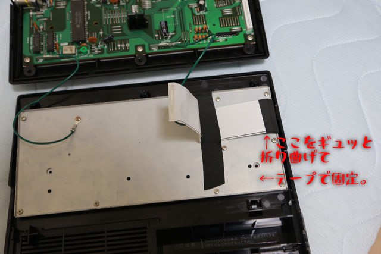

CASIO MX-101 キーボード修復 (2020年9月14日現在)
外側からテープで固定しただけなので、この時点で黒い導電体と、FFCケーブルのマザーボード側端子との導通確認してもほぼ通らない。
圧着するモノが無いので、しっかり導通しないのです。
アセテートテープの部分に少し圧を掛けて、数本導通確認（両端と真ん中付近あたり見ておけば良いと思います。全部見られればより良し）
フィルムキーボードを金属板で固定して、端から出ているFFCケーブルを、アセテートテープ貼ったところで内側に折り曲げ、
かつ、FFCケーブル中央付近でさらに外側へ折り戻します。
その中央付近の折り目あたりで、金属板に固定して完成。
あとは、ケースを閉じるときに、FFCケーブルの反対側の端子をマザボの新しいコネクタに差し込めばOKです。
ケースをネジ止めする前に、全キー反応するのを確認して問題なければケースを閉じます。

[前へ]